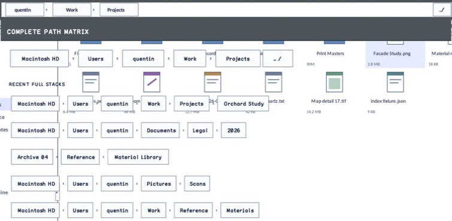

struct · library
AnchoredPopupPlacementResult
AnchoredPopupPlacementResult is the exact output of placement resolution: client-relative bounds plus whether the popup moved above its anchor or had either dimension clamped.
OBSERVED: bundle 005 deterministic-result split; M4 build, focused tests, and Screen Sharing passheader-only or distributed
Visual evidence

Ownership and hierarchy
- Hierarchy
- AnchoredPopupPlacementResult
- Declaration
- include/gui_forms/controls/panel/anchored_popup_layer/anchored_popup_placement/anchored_popup_placement.hpp:32
- Definition
- inline/header-only
Declared methods
No public methods were discovered in this declaration.